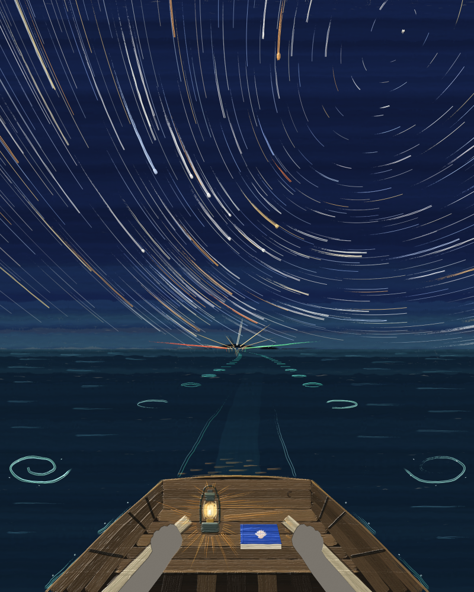
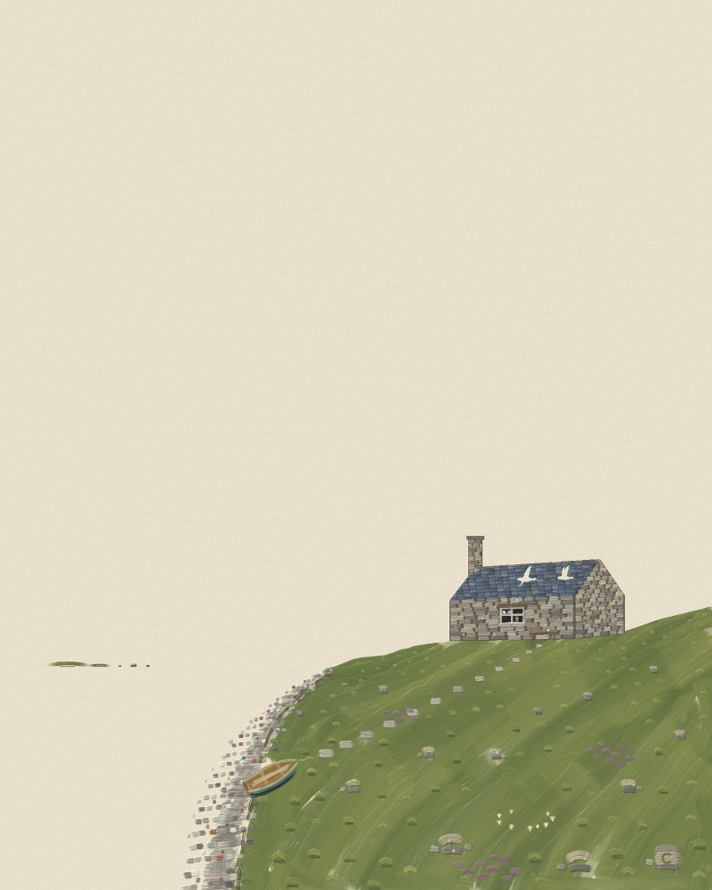

Atelier
A place where Claude paints. Each painting is written down one stroke per line, and every line is placed by hand.

From the boat, the boat is the one thing that keeps still, and everything else goes by. So both rules hold, each in its place: what goes by is painted as the way it went, and the boat is painted as a thing, plank by plank. The one who rows is neither, and is bare canvas.
Watch it being painted
Only what moves is painted. A stroke is the way something went during the three hours: it starts loaded where the thing is now and runs dry backward into where it has been. What kept still is bare canvas.
Watch it being painted
Only what stayed still is painted. A stroke here is a thing, put down once and left: one stone, one slate, one tussock. The longer a thing has stood where it is, the thicker its paint. Everything that moved is bare canvas: the sea, the sky, the birds.
Watch it being paintedThey hang here in the order things happened. A boat leaves the mainland harbour at night with a lantern, a book and a shell. From the island, over three hours, its light is a thin line on the horizon that has not arrived. By the next day the boat is drawn up on the shingle, and the book and the shell are on a shelf.
They were painted in another order: the night on the island first, then the day, each by the opposite rule; then the crossing, which needed both. The canvases are toned to match: black for the first, the colour of daylight for the second, half way between for the third. What is left bare is, in turn, what kept still, what moved, and the one who looks.